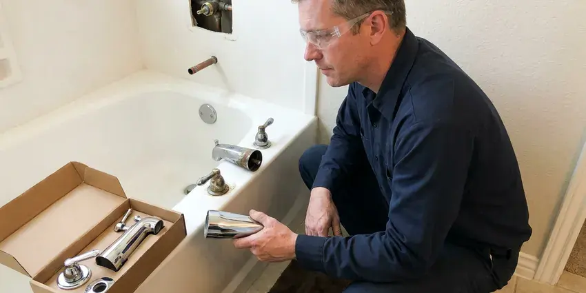

Faucet Replacement in Wailuku, HI
For expert faucet replacement in Wailuku, HI, trust the skilled plumbers at HKL Plumbing.
- Same-Day Faucet Replacement
- New Shutoffs and Supplies
- Quality Fixtures
- Quality Workmanship
A New Faucet and No More Drips in Wailuku, HI.
Call now for a flat price that includes removal, installation and new supply lines.
Your Local Source for Faucet Replacement in Wailuku, HI
HKL Plumbing helps when a faucet has been repaired too many times or no longer matches your space. We remove stubborn, seized faucets without damaging your sink and replace worn shutoff valves at the same time. You get a reliable faucet and a clear price before work begins.
Our expertise includes:
- Angle stop and supply line replacement during each swap
- Diagnose and replace worn or corroded faucet parts.
- Kitchen and Bathroom Faucet Replacement

Additional Bathroom Plumbing Services in Wailuku, HI
From toilets to showers, our bathroom plumbing team in Wailuku, HI handles repairs, installs, and upgrades with tidy, code-compliant work.


Customers
Why Choose HKL Plumbing for Faucet Replacement in Wailuku, HI?
Replacing the faucet is the right time to replace aging shutoff valves and supply lines too. We handle those upgrades so the entire connection is new.
- Local Expertise, Our plumbers are familiar with Wailuku water supply characteristics and common fixture issues, providing tailored solutions.
- Full Upgrade, New shutoffs and supply lines come standard when they are needed.
- Code Compliant, All faucet replacements strictly follow Hawaii plumbing regulations for your safety.
Citywide Coverage
We replace faucets in every part of Wailuku, from older homes to new subdivisions. Scheduling is quick, and same-day service is often available.
Experienced Team
The HKL Plumbing team consists of licensed and insured plumbers who have performed countless faucet replacements. Their expertise means a clean, efficient, and lasting installation every time.
Safety-First Approach
Every installation follows plumbing code, with proper backflow prevention on sprayers and hose connections. We test hot and cold to make sure they are on the correct sides.
Trusted Certified Wailuku Plumbing Services Professionals
At HKL Plumbing, we take pride in providing licensed, certified plumbing services throughout Wailuku, HI. Backed by recognized industry credentials, our experienced plumbers combine technical skill with genuine customer care. Whether it is repair, installation, or maintenance, we follow strict safety and quality standards to deliver long-lasting results you can trust.
Call Us Now PHCC Plumbing Contractor Recognition
PHCC Plumbing Contractor Recognition Better Business Bureau (BBB) Accreditation
Better Business Bureau (BBB) Accreditation Angi Certified Pro
Angi Certified Pro ISO 9001 Quality Management Certification
ISO 9001 Quality Management CertificationReliable Faucet Replacement Services in Wailuku, HI
Outdoor and Utility Faucet Replacement in Wailuku
Outdoor spigots and utility sink faucets are essential but often overlooked until they fail. Only the highest mountain elevations ever see frost, so winter plumbing prep that matters elsewhere generally does not apply here. Heat, cold and mineral-heavy water can lead to cracks or persistent leaks. We provide sturdy replacements for hose bibs, laundry room faucets, and utility sink fixtures. Our installations focus on weather resistance and durability, preventing costly water waste and potential foundation damage from constant dripping near your home.

Utility Sink Faucet Replacement in Wailuku
Utility sink faucets in laundry rooms or garages often handle tougher tasks and can wear out fast. We provide sturdy utility sink faucet replacement in Wailuku, focusing on durable fixtures designed for heavy use. Our team can install wall-mount or deck-mount options, ensuring strong water flow and leak-free operation, which is crucial for preventing water damage in high-traffic utility areas.
Moen Faucet Replacement in Wailuku
Moen faucets are a common choice for many homeowners due to their style and warranty. If your Moen faucet is leaking, corroded, or simply outdated, HKL Plumbing offers professional replacement services. We understand the various valve types and cartridges used in Moen products, making the replacement process smooth and quick. We will make sure your new Moen faucet operates flawlessly and provides years of trouble-free use.
Cost-Effective Faucet Replacement Options in Wailuku, HI
We understand that budget is a consideration for any home improvement. HKL Plumbing offers cost-effective faucet replacement solutions without compromising on quality. We can recommend various faucet options, from budget-friendly utility models to premium designer fixtures, providing clear pricing upfront. Our goal is to give you the best value and a long-lasting replacement that fits your needs and budget here in Wailuku, HI.
Corrosion-Resistant Faucet Options in Wailuku, HI
Around Wailuku, sediment and fine volcanic grit can still build up in aerators, valves, and water heater tanks, so periodic flushing is worthwhile. Depending on water quality, some faucets can corrode faster than others. HKL Plumbing can recommend and install faucets made with corrosion-resistant materials like stainless steel or specific finishes that stand up better to mineral content in the water. This ensures your new faucet in Wailuku, HI lasts longer and keeps its appearance and function.
Outdoor Faucet Replacement in Wailuku, HI
Outdoor hose bibs can crack from sun exposure or from freezing winter nights. Only the very highest mountain elevations ever see frost, so winter plumbing prep that matters elsewhere generally does not apply here. We replace worn spigots with frost-free hose bibs and add vacuum breakers for backflow protection. New hose bibs stop leaks at the handle and spout. We also check for leaks inside the wall behind the bib.
Kitchen Faucet Replacement in Wailuku
A leaking or broken kitchen faucet can be a major inconvenience, wasting water and causing potential damage. Our plumbers are skilled at replacing all types of kitchen faucets, including pull-down, pull-out, single-handle, and bridge styles. We can help you choose a durable replacement that matches your kitchen's style and provides reliable performance, considering factors like local water hardness that can affect how long a fixture lasts. We make sure of proper sealing and connection for a leak-free installation.

Bathroom Faucet Replacement in Wailuku, HI
Upgrading your bathroom faucets can noticeably improve the look and feel of your space while resolving leaks or low pressure. We replace widespread, centerset, single-hole, and wall-mount bathroom faucets. Our team handles everything from removing old, corroded fixtures to installing new, efficient models. We pay close attention to drain assemblies and supply lines, which are often prone to wear in older homes, ensuring a complete and lasting solution.
Faucet Replacement Near Me in Wailuku, HI
Our plumbers are local to Wailuku and know the fixtures common in area homes. We work cleanly, explain your options and give a flat price before we start. Every replacement is backed by our workmanship guarantee.
Searching for faucet replacement near me usually means you want it fixed quickly. HKL Plumbing offers same-day faucet replacement in many cases. We bring the tools to remove even stubborn old faucets.
HKL Plumbing at a Glance
- Licensed and insured plumbers serving Wailuku, HI
- Same-day appointments and 24/7 emergency response
- Upfront, flat-rate pricing before work begins
- 4.8-star rated by 529+ Hawaii customers
Wailuku Map
Wailuku Information
- Population
- 17,697
- Area codes
- Local
- Service area
- Wailuku and communities within 40 miles
- Nearby
- Kahului, Kihei, Lahaina, East Honolulu
Faucet replacement is important in Wailuku, HI homes because worn fixtures waste water and can leak into cabinets, so efficient, leak-free fixtures are essential for preventing waste and damage.
Expert Services
Trust our professionals for reliable HKL Plumbing solutions in Wailuku, HI.
Our Specialized Plumbing Services in Wailuku, HI
At HKL Plumbing, we provide a complete range of plumbing services across Wailuku, HI. From leak detection to full system installations, our team ensures fast, precise, and affordable service for both residential and commercial properties. Explore our core services below:


How Our Faucet Replacement Process Works in Wailuku, HI
We remove the old, install the new and make sure everything works before we go.
Request a Quote
Call (808) 649-6718 or fill out our online form to schedule your faucet replacement service. We will go over your needs and provide an upfront estimate for the job.
On-Site Assessment
Our licensed plumber will arrive at your Wailuku home to check the existing faucet, inspect the plumbing, and confirm the best replacement solution. We will answer any questions you have.
Professional Installation
We will carefully remove your old faucet and properly install the new one, ensuring all connections are secure and leak-free. We test everything thoroughly before we leave.
Frequently Asked Questions About Faucet Replacement in Wailuku
Faucet replacement labor typically runs $150 to $350. Including a quality mid-range faucet, most jobs total $300 to $750. Touchless or high-end faucets can bring the total to $800 or more.
If your shutoff valves are old, stiff or corroded, yes. Replacing them during a faucet swap is inexpensive and prevents future leaks.
We install all major reputable faucet brands, including Delta, Moen, Kohler, American Standard, Pfister, and more. Our plumbers are familiar with the specifications and installation requirements for a wide range of manufacturers, giving you a perfect fit.
HKL Plumbing stands behind our work with a solid warranty on all faucet replacement services. The specific terms of the warranty will be explained before work begins, giving you peace of mind regarding our craftsmanship.
Yes, as part of our full-service approach, our plumbers will remove and responsibly dispose of your old faucet. You will not have to worry about the cleanup or hauling away the old fixture after your new one is installed.
Faucets often leak due to worn-out washers, O-rings, or cartridges, which can degrade faster with hard water. Around Wailuku, sediment and fine volcanic grit can still build up in aerators, valves, and water heater tanks, so periodic flushing is worthwhile. High water pressure, corrosion from mineral buildup, and general wear and tear over time are also common causes.
Around Wailuku, sediment and fine volcanic grit can still build up in aerators, valves, and water heater tanks, so periodic flushing is worthwhile. Hard water can lead to mineral deposits, or limescale, building up inside faucets. This buildup can reduce water flow, cause drips, and corrode internal components over time. Regular maintenance or choosing faucets designed for hard water can help them last longer.
Most faucet replacements take about 1 to 1.5 hours. Seized faucets or shutoff valve replacements can add time.
What People Are Saying About Our Plumbing Experts?

Patricia H.
We had a slab leak that two other companies could not find. HKL Plumbing located it in under an hour, explained our options, and the price matched the quote to the dollar.
Slab Leak Repair · Kihei, HI
James P.
Our commercial plumbing system had a leak under the sink, and HKL Plumbing handled it professionally. The plumbers arrived quickly and restored everything without disruption to our customers.
Commercial Plumbing · Kahului, HIRobert G.
The trenchless sewer replacement saved our front yard. They walked us through the camera inspection footage first so we knew exactly what we were paying for.
Sewer Line Replacement · Kaiminani, HI
Sofia M.
Two new toilets installed in one visit, no mess left behind, and the tech even adjusted a faucet he noticed was dripping. Fair pricing and really friendly.
Toilet Installation · Kailua, HILaura S.
I scheduled a water heater replacement, and the team made the process smooth and affordable. The new unit works perfectly, and they cleaned up after completing the job.
Water Heater Replacement · Kahului, HI
Emily R.
I called HKL Plumbing for plumbing repair, and the technician was fast, polite, and thorough. They explained the problem clearly and fixed it the same day. I will definitely hire them again. Highly recommended!
Plumbing Repair · Kaiminani, HI